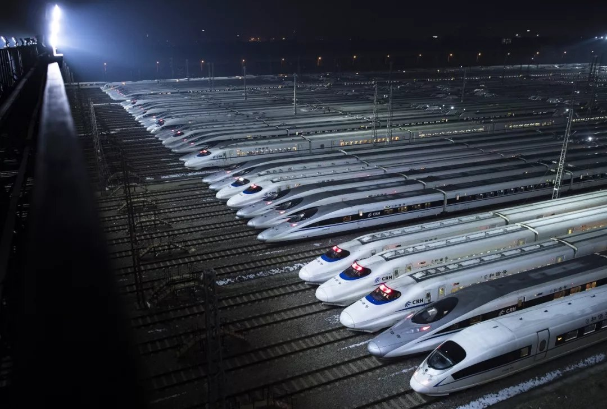

中国高铁的快速发展向我们展示出了“中国速度”
2021年1月21日

中国高速铁路（China Railway Highspeed），简称中国高铁，
是指中国境内建成使用的高速铁路，为当代中国重要的一类交通基础设施。
根据《高速铁路设计规范》（TB10621-2014）：
中国高速铁路是设计速度每小时250千米（含预留）以上、
列车初期运营速度每小时200千米以上的客运专线铁路 。
根据《中长期铁路网规划（2016年）》：
中国高速铁路网由所有设计速度每小时250千米以上新线和部分经改造后设计速度达标每小时200千米以上的既有线铁路共同组成 。
至2019年底，中国高速铁路营业总里程达到3.5万千米，居世界第一 。
截至2020年年底，全国铁路营业里程14.6万公里，高速铁路运营里程达3.79万公里，
稳居世界第一。 截至2021年12月30日，中国高铁运营里程突破4万公里。
截至2022年6月20日，中国已有近3200公里高铁常态化按时速350公里高标运营。
网站建设|隐私政策|联系平台
备案号：1234567890
捐赠热线：010-64790590
版权所有 © 2021 abcd.org.cn All rights reserved. 京ICP备123456789号